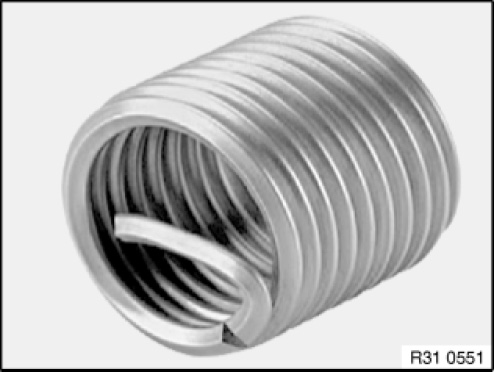
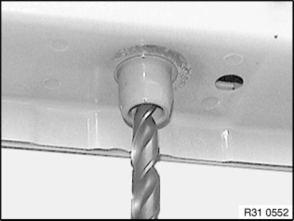
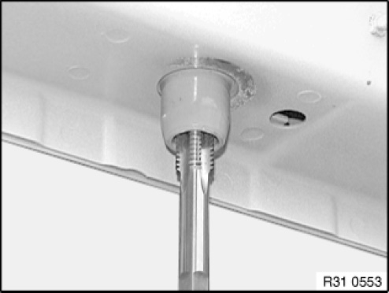
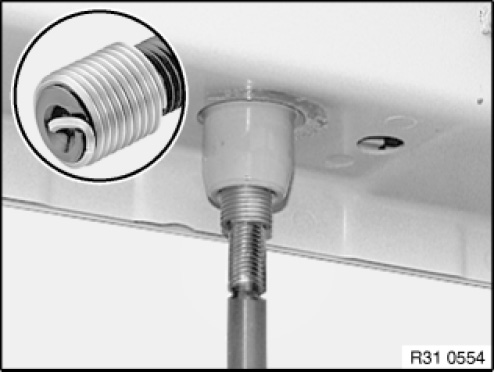
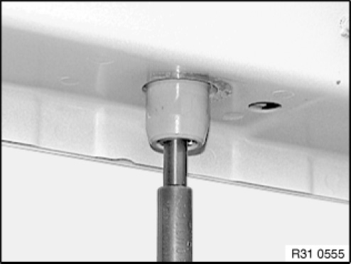

33 00 ... Notes on Repairing Threads
31 00 ... Notes on repairing threads

IMPORTANT: Install Helicoil thread inserts so that they are flush with the original thread.
NOTE: Damaged threads in engine support may be repaired with Helicoil thread inserts. Comply with the procedure described in the example.

Procedure:
1. Create a clean core hole; if necessary, drill out screw remnants

2. Create locating thread for Helicoil thread insert

3. Pick out Helicoil thread insert in accordance with the table and screw into the locating thread until flush with the original thread

4. Break drive pin and remove